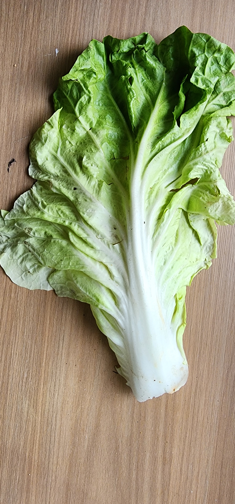
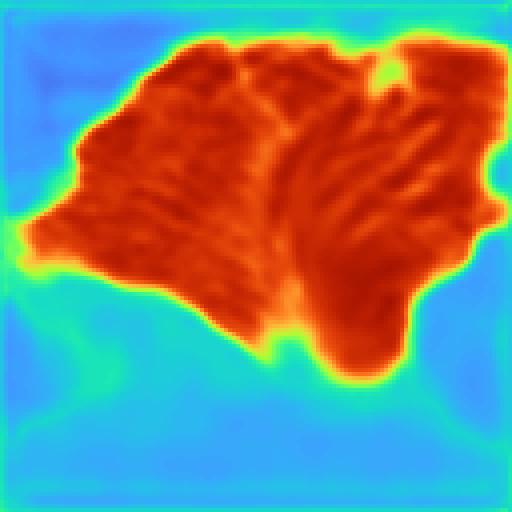
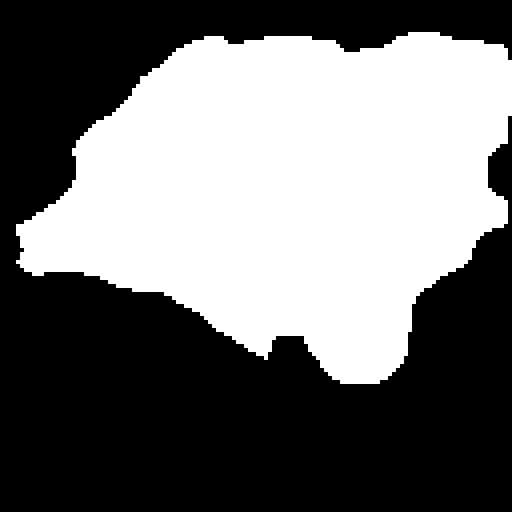
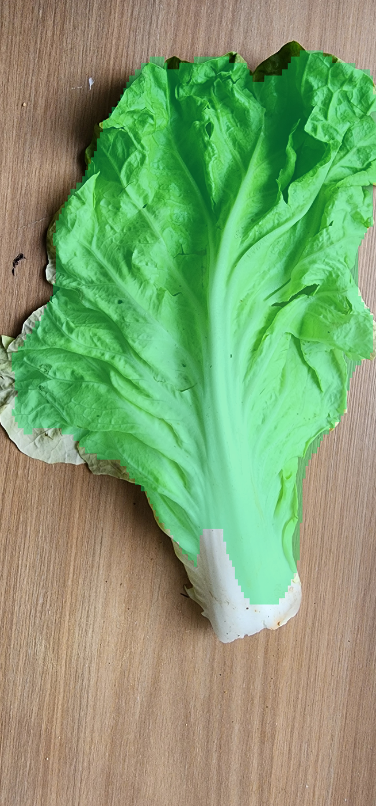
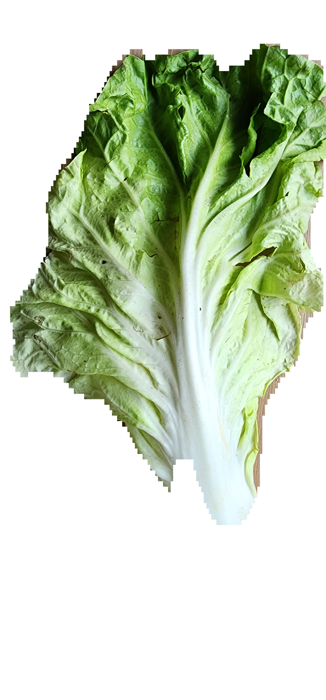
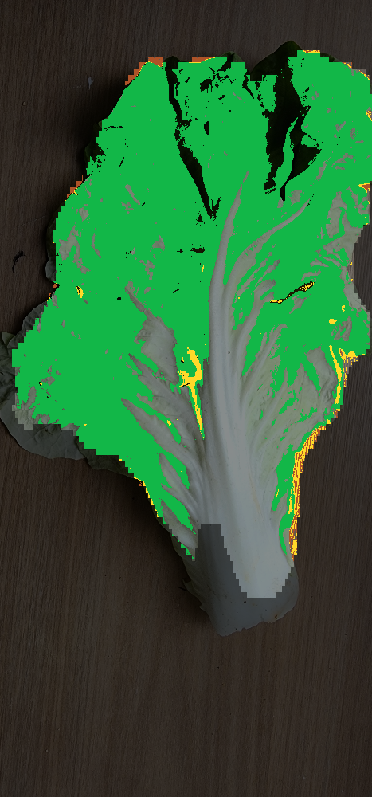
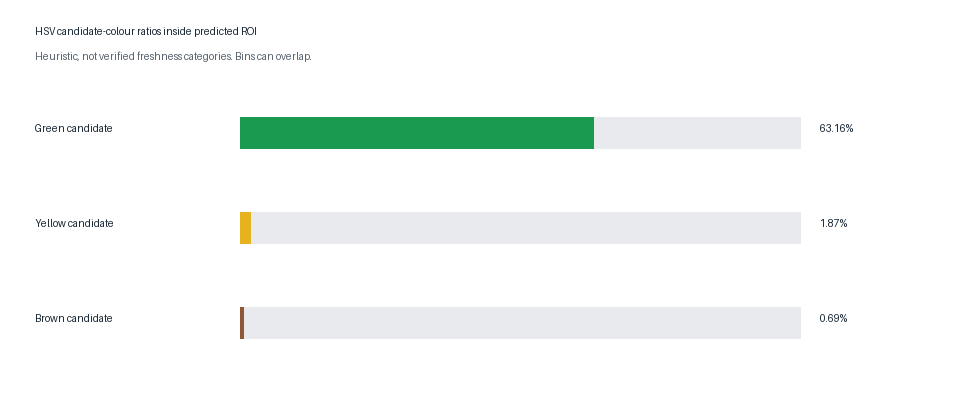

Input: A01C01L01正.jpg · Model: ResNet18UNet (Session 6.2 analysis-only) · One image only
01. Original upright photo

EXIF rotation is corrected; image data is not colour-calibrated.
02. Model input (128 x 128)
Resized RGB / 255. This is the tensor supplied to the network.
03. Predicted probability map

Sigmoid of model logits; NOT a calibrated probability of being fresh.
04. Binary leaf mask

Pixel is foreground if predicted value is >= 0.5.
05. Overlay on original image

A visual check for leakage onto the table and missing leaf regions.
06. Leaf isolated from background

Uses the same predicted mask. Not a new model prediction.
07. HSV colour candidate highlights

Green, yellow and brown candidate pixels are illustrative. Colour groups can overlap.
08. Candidate colour ratio chart

Fractions of sampled pixels INSIDE the model-selected ROI.